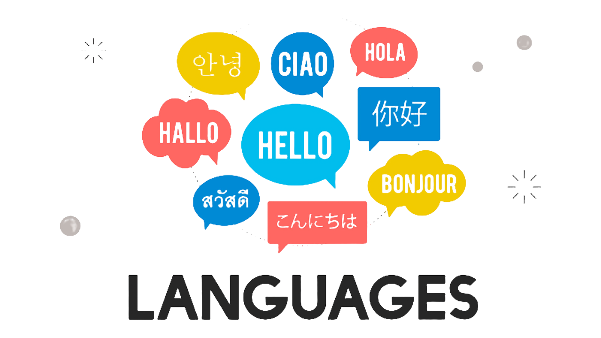

Hard Skills
O que são?
Conjunto de habilidades técnicas adquiridas por meio de formação tradicional e capacitação, como cursos, treinamentos e workshops.
As hard skills compõem as competências práticas dos profissionais e ajudam a garantir a execução das funções.
Quais possuo?
1. Formação
- Desenvolvedor Front-End - SENAI-SP/ Ford Company (em andamento)
- Técnico em Portos - Etec Dona Escolástica Rosa - (Em andamento)
-
- Bacharelado em Engenharia de Produção - Universidade Santa Cecília - (Concluído em 2021)
- Técnico em Logística - Etec Dona Escolástica Rosa - (Concluído em 2021)
- Técnico em Informática integrado ao Ensino Médio - Escola e Faculdade Fortec - (Concluído em 2016)

2. Hard Sills adquiridas com as formações
- Uso de linguagens de programação (HTML, CSS e Java Script);
-
- Gestão de projetos administrativos;
- Uso do Microsoft 365 (Office);
- Uso de softwares da área financeira, como: Microled (Gerencial e Redex), TOTVS e Corporate;
Clique no botão da direita para saber os idiomas